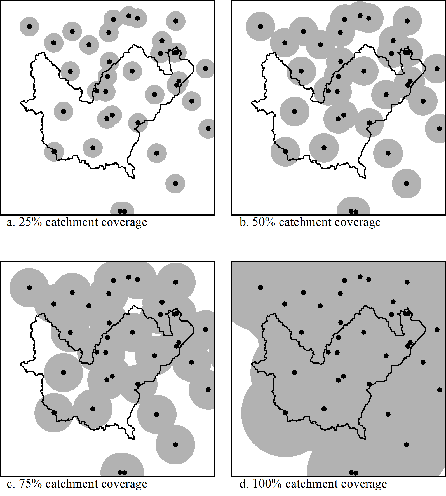

Showcase¶
- Perspective display of simulated flood surface.
- Software: ESRI ArcGIS, pre-prepared TUFLOW results, Adobe Photoshop
- Interpolation of Bureau of Meteorology radar intensity data where the rain gauges had missed a storm event because of their spatial distribution.
- Software: ESRI ArcGIS, Python.
- The following series of diagrams describe the processing of geospatial data including rain and stream gauges, settlements, watercourses and algorithmically-generated catchments in order to estimate settlement risk based on the characteristics of the upstream catchment.
- Software: ESRI ArcGIS, Python.
Rain gauge distribution and density relative to the catchment upstream of a settlement:
Approximating the travel time of water based on terrain roughness:
Determining the area of the gauged catchment upstream of the settlement, considering the evacuation time needed for that settlement: